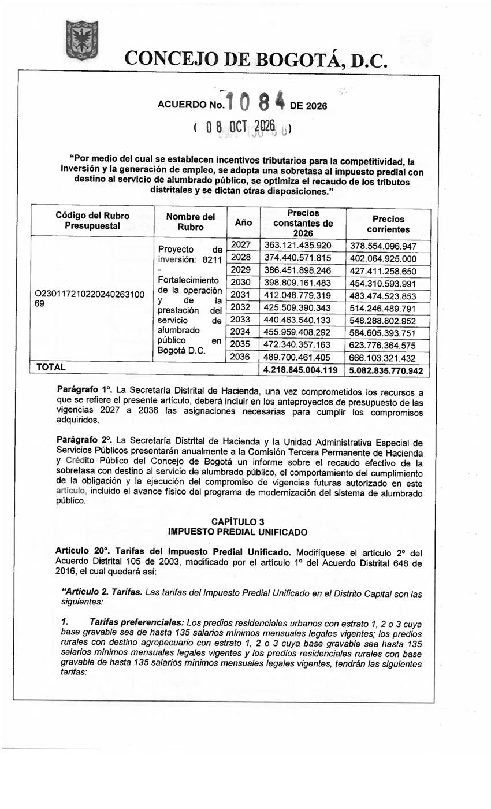
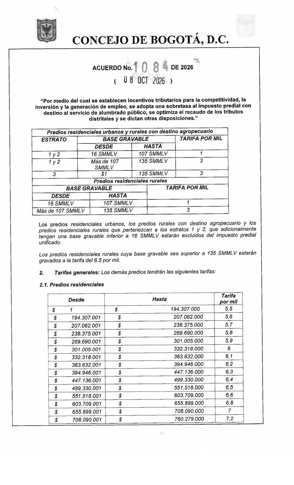
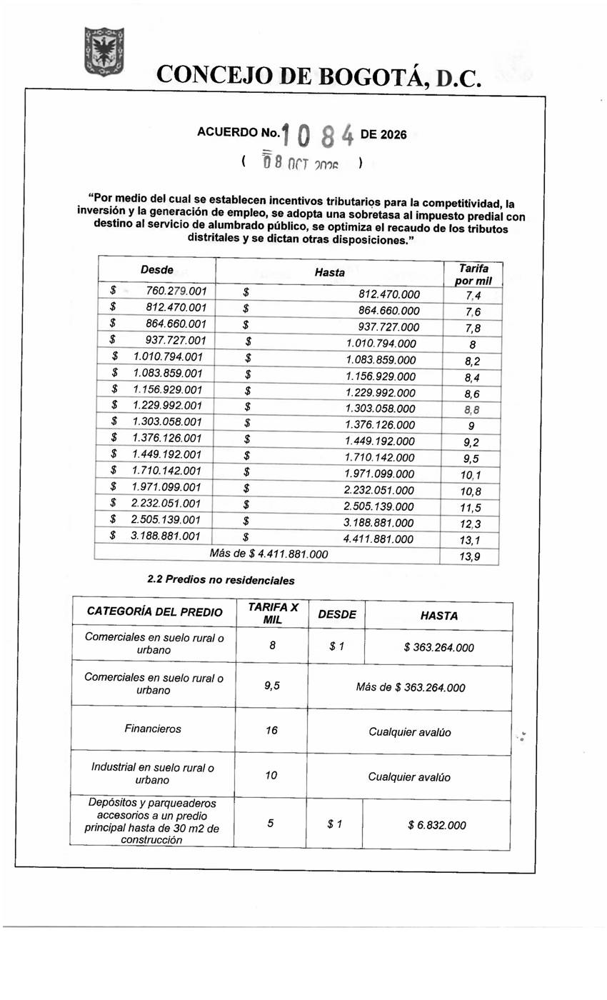
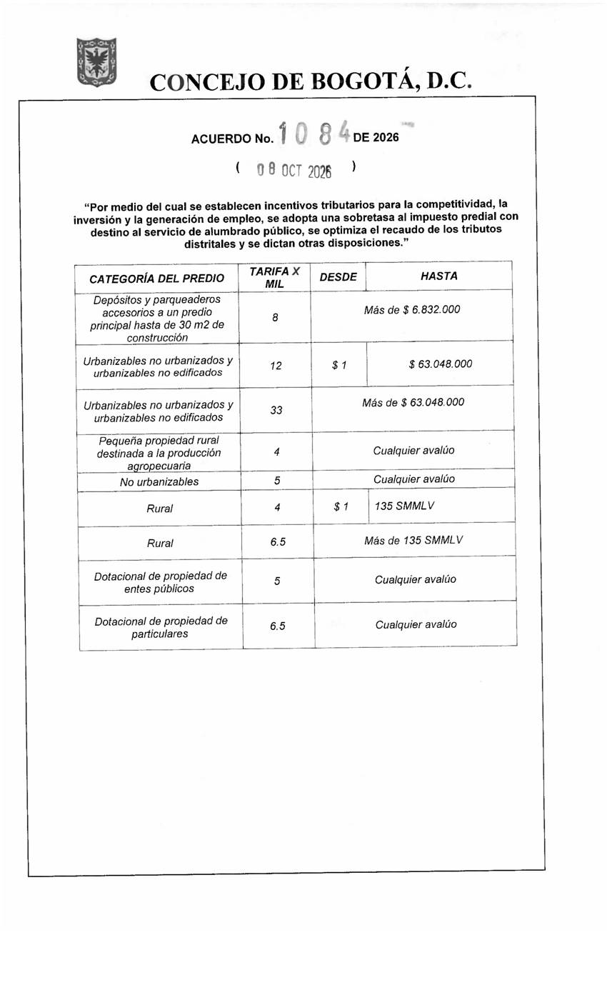
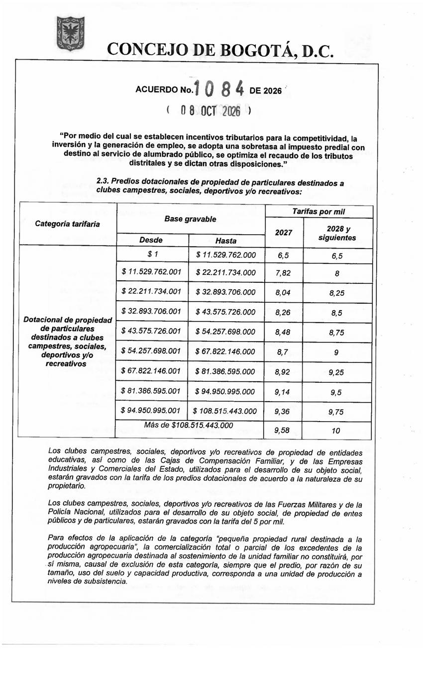

Art. 20 del Acuerdo 1084 en las páginas 21 a 25 del PDF. El texto digital del Régimen Legal (Acuerdo 105 de 2003, art. 2) coincide con las categorías no residenciales, las preferenciales y los clubes.


| Estratos | Desde | Hasta | Tarifa por mil |
|---|---|---|---|
| 1,2 | 16 SMMLV | 107 SMMLV | 1 |
| 1,2 | más de 107 SMMLV | 135 SMMLV | 3 |
| 3 | $1 | 135 SMMLV | 3 |
| rural | 16 SMMLV | 107 SMMLV | 1 |
| rural | más de 107 SMMLV | 135 SMMLV | 3 |
| rural | más de 135 SMMLV | en adelante | 6.5 |
Excluidos: Estratos 1 y 2 (urbanos, rurales agropecuarios y residenciales rurales) con base gravable inferior a 16 SMMLV
| Página del PDF | El OCR leyó | La imagen dice | Se usa |
|---|---|---|---|
| 22 | estarán excluidos los predios de estratos 1 y 2 con base gravable inferior a 186 SMMLV | inferior a 16 SMMLV | imagen |

| Desde ($) | Hasta ($) | Tarifa por mil |
|---|---|---|
| 1 | 194.307.000 | 5.5 |
| 194.307.001 | 207.062.000 | 5.6 |
| 207.062.001 | 238.375.000 | 5.7 |
| 238.375.001 | 269.690.000 | 5.8 |
| 269.690.001 | 301.005.000 | 5.9 |
| 301.005.001 | 332.318.000 | 6 |
| 332.318.001 | 363.632.000 | 6.1 |
| 363.632.001 | 394.946.000 | 6.2 |
| 394.946.001 | 447.136.000 | 6.3 |
| 447.136.001 | 499.330.000 | 6.4 |
| 499.330.001 | 551.518.000 | 6.5 |
| 551.518.001 | 603.709.000 | 6.6 |
| 603.709.001 | 655.899.000 | 6.8 |
| 655.899.001 | 708.090.000 | 7 |
| 708.090.001 | 760.279.000 | 7.2 |
| 760.279.001 | 812.470.000 | 7.4 |
| 812.470.001 | 864.660.000 | 7.6 |
| 864.660.001 | 937.727.000 | 7.8 |
| 937.727.001 | 1.010.794.000 | 8 |
| 1.010.794.001 | 1.083.859.000 | 8.2 |
| 1.083.859.001 | 1.156.929.000 | 8.4 |
| 1.156.929.001 | 1.229.992.000 | 8.6 |
| 1.229.992.001 | 1.303.058.000 | 8.8 |
| 1.303.058.001 | 1.376.126.000 | 9 |
| 1.376.126.001 | 1.449.192.000 | 9.2 |
| 1.449.192.001 | 1.710.142.000 | 9.5 |
| 1.710.142.001 | 1.971.099.000 | 10.1 |
| 1.971.099.001 | 2.232.051.000 | 10.8 |
| 2.232.051.001 | 2.505.139.000 | 11.5 |
| 2.505.139.001 | 3.188.881.000 | 12.3 |
| 3.188.881.001 | 4.411.881.000 | 13.1 |
| 4.411.881.001 | en adelante | 13.9 |

| Destino | Tarifa por mil | Desde | Hasta |
|---|---|---|---|
| comercial | 8 | 1 | 363.264.000 |
| comercial | 9.5 | 363.264.001 | en adelante |
| financiero | 16 | 1 | en adelante |
| industrial | 10 | 1 | en adelante |
| depositos_y_parqueaderos_accesorios_hasta_30_m2 | 5 | 1 | 6.832.000 |
| depositos_y_parqueaderos_accesorios_hasta_30_m2 | 8 | 6.832.001 | en adelante |
| urbanizables_no_urbanizados_y_urbanizables_no_edificados | 12 | 1 | 63.048.000 |
| urbanizables_no_urbanizados_y_urbanizables_no_edificados | 33 | 63.048.001 | en adelante |
| pequena_propiedad_rural_produccion_agropecuaria | 4 | 1 | en adelante |
| no_urbanizables | 5 | 1 | en adelante |
| rural | 4 | 1 | 135 |
| rural | 6.5 | 135 | en adelante |
| dotacional_entes_publicos | 5 | 1 | en adelante |
| dotacional_particulares | 6.5 | 1 | en adelante |

| Desde ($) | Hasta ($) | 2027 | 2028 y siguientes |
|---|---|---|---|
| 1 | 11.529.762.000 | 6.5 | 6.5 |
| 11.529.762.001 | 22.211.734.000 | 7.82 | 8 |
| 22.211.734.001 | 32.893.706.000 | 8.04 | 8.25 |
| 32.893.706.001 | 43.575.726.000 | 8.26 | 8.5 |
| 43.575.726.001 | 54.257.698.000 | 8.48 | 8.75 |
| 54.257.698.001 | 67.822.146.000 | 8.7 | 9 |
| 67.822.146.001 | 81.386.595.000 | 8.92 | 9.25 |
| 81.386.595.001 | 94.950.995.000 | 9.14 | 9.5 |
| 94.950.995.001 | 108.515.443.000 | 9.36 | 9.75 |
| 108.515.443.001 | en adelante | 9.58 | 10 |